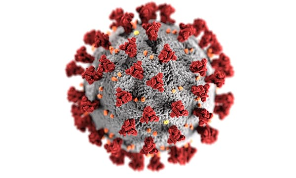

COVID-19 Molecular Structure and Therapeutics Hub
Aggregating critical information to accelerate drug discovery for the molecular modeling and simulation community.
What is this hub about?
This site provides a community-driven data repository and curation service for molecular structures, models, therapeutics, and simulations related to computational research related to therapeutic opportunities for COVID-19 (caused by the SARS-CoV-2 coronavirus). For more info about this project, see the about page. This is a public process and we encourage people to not only submit data through Pull Requests or the Large Data Submission Request form, but we also encourage people to be part of our Review Teams and help look over the data. For instructions on how to contribute, please see the contributing page.
Quick Terminology [Full Glossary]:
- Targets: The biological mechanisms and functions which can be exploited to reduce, prevent, or treat the virus.
- Proteins: The biological proteins associated with the SARS-CoV-2 virus and host.
- Structures: Data defining structures determined by experimental methods and referenced via a unique identifier such as a PDB ID.
- Models: Derived, integrated, or refined structures from multiple data sources prepared for different computational tasks.
- Therapeutics: Molecules, drugs, antibodies, peptides, etc. which implement targets.
- Simulations: The datasets produced as a result of applying the models to different scientific techniques.
- Links: External structures, models, drug libraries, and other resources
Targets:
3CLpro / Mpro Activity
Inhibition of PLpro Protease Activity
Host Immune Response
Inhibition of Nsp13 Helicase Activity
Blocking SARS-CoV-2 Spike Protein Binding to Human ACE2 Receptor
Inhibiting Cleavage of the SARS-CoV-2 Spike Protein
Inhibition of Formation of the Viral Fusion Core
Inhibition of Viral Polymerases
Proteins:
3CLpro ACE2 BoAT1 E protein Fc receptor Furin Helicase IL6R M protein N protein NSP1 NSP10 NSP11 NSP14 NSP15 NSP16 NSP2 NSP4 NSP6 NSP7 NSP8 NSP9 ORF10 ORF3a ORF6 ORF7a ORF7b ORF8 PD-1 PLpro RdRP TMPRSS2 fusion core p38 spike
Structures:
3CLpro ACE2 BoAT1 E protein Fc receptor Furin Helicase IL6R M protein N protein NSP1 NSP10 NSP11 NSP14 NSP15 NSP16 NSP2 NSP4 NSP6 NSP7 NSP8 NSP9 ORF10 ORF3a ORF6 ORF7a ORF7b ORF8 PD-1 PLpro RdRP TMPRSS2 fusion core p38 spike
Models:
3CLpro ACE2 BoAT1 E protein Fc receptor Furin Helicase IL6R M protein N protein NSP1 NSP10 NSP11 NSP14 NSP15 NSP16 NSP2 NSP4 NSP6 NSP7 NSP8 NSP9 ORF10 ORF3a ORF6 ORF7a ORF7b ORF8 PD-1 PLpro RdRP TMPRSS2 fusion core p38 spike
Therapeutics:
antibody antiviral immunotherapy peptide small molecule
Simulations:
3CLpro ACE2 BoAT1 E protein Fc receptor Furin Helicase IL6R M protein N protein NSP1 NSP10 NSP11 NSP14 NSP15 NSP16 NSP2 NSP4 NSP6 NSP7 NSP8 NSP9 ORF10 ORF3a ORF6 ORF7a ORF7b ORF8 PD-1 PLpro RdRP TMPRSS2 fusion core p38 spike
Links:
CORD-19: COVID-19 Open Research Dataset COV3D: A Coronavirus 3D Structure Database Coronaviruses 101- Focus on Molecular Virology Drug Repurposing Hub DrugBank database Enamine REAL Space MolPort PubChem SWEETLEAD Structural Biology Task Force GitHub page Structure models of all mature peptides in 2019-nCoV genome by C-I-TASSER SuperDRUG The Cambridge Structural Database Tristan Croll ISOLDE COVID-19 models WuXi GalaXi zinc15 database